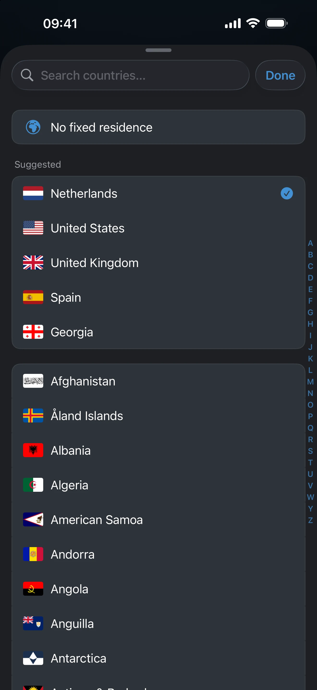
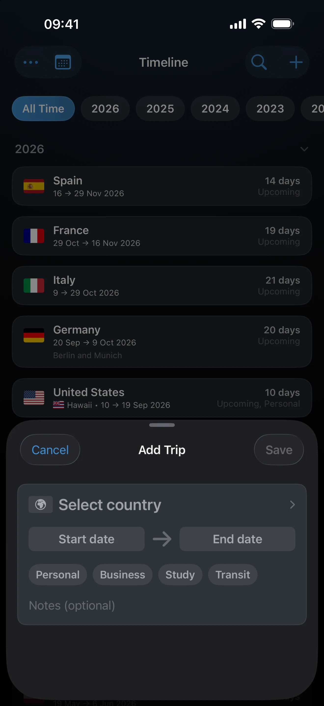
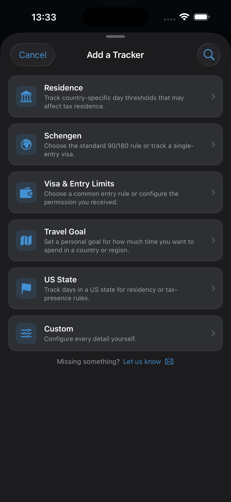

Getting Started
Last updated: April 11, 2026
Set up AtlasDays in an order that keeps Days Abroad, early dashboard totals, and first trackers from drifting off immediately.

What This Page Helps You Do
Start here when you are setting up AtlasDays for the first time, restarting after skipping onboarding, or cleaning up an early setup before you rely on the numbers.
This page should leave you with:
- a clear Home Country decision, or No fixed residence if that fits you better
- the trips that still affect live counts entered with the right precision first
- a clear decision on whether to add a first tracker now, later, or only provisionally
- a clear decision on whether Photo Import or CSV Import is worth doing yet
Use the app in this order: Timeline holds the trip record, Dashboard shows what that record produces, and Settings controls Home Country, Import, iCloud sync, and permissions.
Avoid These Setup Mistakes First
Most early confusion comes from a few avoidable setup choices. Check these before you do anything else:
- Wrong Home Country: if Days Abroad looks wrong early, verify Home Country before you question the dashboard.
- Wrong base model: choose a real Home Country when one country should be treated as home. Choose No fixed residence only when you do not want one country treated as home at all.
- Approximate history before live trips: do not start by filling vague older trips if you still need to enter the trips that affect a live limit, residency threshold, or near-term paperwork question.
- Trackers too early: a tracker can exist before the record is ready, but its result should be treated as provisional until the relevant trips are good enough.
- Import before review: do not save a batch from Photo Import or CSV Import before checking which trips should be Exact Dates, Year, Unknown, or Transit.
- Onboarding as proof: finishing onboarding only means the basic settings flow is complete. It does not prove the trip record is already trustworthy.
- Auto-Detect Trips as a substitute: Auto-Detect Trips is optional and useful for new movement, but it does not replace adding your first important trips correctly.
Set Up AtlasDays in This Order
This order front-loads the decisions that change Days Abroad, live tracker math, and early dashboard trust. The app still works if you skip ahead, but early numbers are much easier to understand if you do these in sequence.
1. Decide your Home Country first
Open Settings and set Home Country to the country that should be treated as home in the app. This is one of the first things to verify if Days Abroad or early dashboard totals look wrong.
Choose a real Home Country if one country should be treated as home for abroad-vs-home questions. Choose No fixed residence if you do not want one country treated as home at all. In No fixed residence mode, Days Abroad counts all recorded days from Exact Dates trips instead of subtracting time in one home country.
Do this before entering lots of trips. If you add history first and change this decision later, Days Abroad can shift in ways that feel like bad math even when the app is doing exactly what you asked.
During onboarding, choosing a real Home Country and leaving Track residency on can create a yearly Residence tracker automatically with a default threshold of 183 days. Treat that as useful only when the trips behind it are ready.

2. Add the trips that affect live counts

Open Timeline and tap +. Start with the trips that can still affect a current visa limit, residency threshold, or near-term paperwork question. If a question is live now, that trip belongs early in the record.
- Use Exact Dates when the trip needs to feed real day counts, tracker math, or near-term paperwork.
- Leave the end date empty only for an intentionally ongoing trip with Exact Dates. That trip keeps affecting totals until you close it.
- Mark a trip as Transit only if you did not actually enter the country. Transit stays in history but counts 0 days.
- AtlasDays counts both the arrival day and the departure day for Exact Dates.
This step comes before trackers for a reason. A good tracker needs a good trip record. If you are close to a limit or threshold, slow down here and get these trips right first.

3. Add older approximate history only after the live trips are right
Use Year when you know which year a trip belongs in but not the exact dates. Use Unknown if you know you visited a place but cannot place it confidently in time yet.
These entries preserve your record, but they do not create precise day totals or tracker counts. Year entries also cannot be future-dated.
Do not let rough older history delay the trips that still matter now. It is usually better to get the live-count trips correct first, then come back and fill older background history carefully.

4. Add your first tracker only when the relevant trips are ready
Open Dashboard. If you do not already have a tracker, tap Add Tracker and choose the preset that matches the limit or goal you actually want to monitor.
A tracker is useful early only if the trips behind that question are already good enough. If those trips are still approximate, either wait to add the tracker or treat its result as provisional until the record is cleaned up.
If onboarding already created a Residence tracker from your Home Country choice, that is normal. Review the trips behind it before acting on the number. For preset types, windows, alerts, and tracker trust, use Trackers and Limits.

5. Use import only when it is actually worth it
Open Settings > Import when you have enough history that manual entry would be slow. Choose Photos when geotagged photo metadata is your strongest source. Choose CSV when your history already exists in a spreadsheet or travel notes.
Photo Import scans on-device metadata and drafts trips for review. The free plan includes the last 180 days of photo history; older or all-time photo scans require AtlasDays Pro.
CSV Import is worth it for a structured backlog. Manual entry is often cleaner for a small number of recent or important trips, especially when those trips affect live counts right away.
Do not invent Exact Dates just to fill the app faster. Import speed is not worth damaging record quality. Save trips with defensible calendar dates as Exact Dates, rough history as Year, and truly unknown visits as Unknown.
When the Setup Is Trustworthy Enough
You do not need a perfect lifetime travel history before you can trust a near-term question. You do need the trips behind that question to be right enough.
- Home Country or No fixed residence matches the way you want Days Abroad interpreted.
- The trips that still affect live limits, residency thresholds, or paperwork are entered first, using Exact Dates when you can defend them.
- Any ongoing trip is intentionally still open.
- Transit is used only for non-entry travel.
- Your first tracker is either based on ready trips or clearly treated as provisional.
- You understand that finished onboarding, imported rows, photo-based suggestions, Auto-Detect Trips, or iCloud sync do not by themselves prove the record is trustworthy.
What Affects Counts and Results
- Home Country versus No fixed residence changes what Days Abroad means.
- Exact Dates feed tracker math and precise dashboard day totals.
- Year and Unknown preserve history, but they do not generate exact counted days.
- Transit stays in the record and may appear on the map, but it counts 0 days.
- ongoing trips with Exact Dates use today as the effective end until you close them.
- Overlapping Exact Dates trips can change totals and should be cleaned up before you rely on them.
- Country Count mode changes visited-country totals, but it does not change tracker math.
- Auto-Detect Trips and iCloud sync can help populate or restore the record, but the numbers still depend on the trip data being correct.
Where to go next
Trip Modes and Record Quality is the next page if the real problem is trip precision, duplicates, overlaps, or deciding between Exact Dates, Year, Unknown, and Transit.
Trackers and Limits explains when a first tracker is worth adding, which setup choices change the result, and when a tracker should still be treated as provisional.
Dashboard and Map helps when early Days Abroad, totals, or map output still look wrong after setup.
Photo Import is the next page if geotagged photo metadata is your best source for rebuilding older travel history.
CSV Import is the next page if you have a spreadsheet-style backlog and need to decide whether import is worth it or whether manual entry is cleaner.
Privacy, Location, and Sync explains when to enable Auto-Detect Trips, which permissions matter, and what stays local.
iCloud Sync and Restore explains what to expect from iCloud sync if you are setting up a second device or recovering after a reinstall.